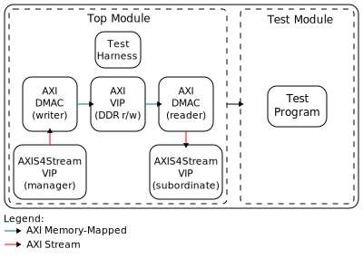

DMA Framelock
Overview
The purpose of this testbench is to test the framelock synchronisation feature of the library/axi_dmac.
This feature adds support for multiple 2D frame buffers, which are used in a cyclic way. On the same set of buffers, a second DMAC core can operate. The “Framelock” mechanism ensures no buffer is accessed by two DMACs at the same time.
The entire HDL documentation can be found at AXI DMAC.
Block design
The block design is based on the test harness with the addition of:
Two DMAs, one with the role of writer (stream to memory-mapped) and the other with the role of reader (memory-mapped to stream).
Two AXI4Stream VIPs, to produce and consume the generated test pattern.
A known test pattern is provided to the writer and propagated to the reader, and is monitored to check if the output matches the expected output.
Block diagram
{kind=link}
Configuration parameters and modes
The following parameters of this project that can be configured:
M_DMA_CFG_MAX_NUM_FRAMES_WIDTH: defines the max number of buffer as a power of two. Valid values are between 2 (4 buffers) and 5 (32 buffers).
M/S_DMA_CFG_AUTORUN: enables autorun mode to initiate transfers without software intervention.
M_DMA_CFG_USE_EXT_SYNC: enables external synchronization support for the writer.
S_DMA_CFG_USE_EXT_SYMC: enables external synchronization support for the reader.
SRC/DST_AXIS_VIP_CFG_TDATA_NUM_BYTES: defines the
axi4stream_vipTDATA_NUM_BYTES and is also used to compute the time in cycles for a frame duration.
Build parameters
The parameters mentioned above can be configured when starting the build, like in the following example:
user@analog:~$
make M_DMA_CFG_USE_EXT_SYNC=1 M_DMA_CFG_MAX_NUM_FRAMES=3
Configuration files
The following are the available configuration files along with their corresponding parameter values:
Parameter |
cfg1 |
cfg2_fsync |
cfg3_fsync_autorun |
|---|---|---|---|
MAX_NUM_FRAMES_WIDTH |
4 |
4 |
4 |
AUTORUN |
0 |
0 |
1 |
M_USE_EXT_SYNC |
0 |
0 |
0 |
S_USE_EXT_SYNC |
0 |
1 |
1 |
TDATA_NUM_BYTES |
8 |
8 |
8 |
Tests
The following test program file is available:
Test program |
Usage |
|---|---|
test_program |
Test the framelock without external synchronization. |
test_program_frame_delay |
Test the framelock with synchronization stimulus delayed. |
Available configurations & tests combinations
The configuration files are compatible with the following test programs:
Test program |
cfg1 |
cfg2_fsync |
cfg3_fsync_autorun |
|---|---|---|---|
test_program |
✓ |
✗ |
✗ |
test_program_frame_delay |
✗ |
✓ |
✓ |
CPU/Memory interconnects addresses
Instance |
Address |
|---|---|
ddr_axi_vip |
0x8000_0000 |
dut_rx_dmac |
0x7C42_0000 |
dut_tx_dmac |
0x7C43_0000 |
Interrupts
Instance name |
HDL |
|---|---|
dut_tx_dma |
13 |
dut_rx_dma |
12 |
Test stimulus
The AXI4Stream Manager provides a test pattern that is propagated to the AXI4Stream Subordinate.
The test program prepares the environment and the DMAs under test.
Environment Bring up
The steps of the environment bring up are:
Create the environment.
Start the environment.
Start the clocks.
Assert the resets.
DMA testing
Initializes the sequencers, monitors and scoreboards.
Initiate DMA APIs for writer and reader.
Do sanity test on DMA’s scratch and ID register.
Do single tests on variant number of frames, distance and clock frequencies:
Remove backpressure at AXIS destination and DDR.
Obtain randomized DMA sequence.
Enable sequencer test data generation.
Configure control and flags of the DMA.
Submit the DMA sequence.
Generate synchronisation stimulus (if enabled).
Wait the number of frames are generated.
The transmitted data is the frame number, occupying a single byte and repeated on all other bytes of the frame. The scoreboard asserts if the first data beat is equal or higher than the previous frame number, since the framelock shall repeat or skip frames depending on the clock ratios between the writer and reader. Then asserts if all bytes in the frame are equal to the first byte.
Note
The testbench may end before the last frame is fully transferred at the reader stream interface.
Warning
Not all values yield valid configuration.
In particular, in dynamic mode, the reader may read a buffer being currently accessed by the writer if the number of frames and distance are close enough to cause the reader to be the total number of frames behind.
Building the testbench
The testbench is built upon ADI’s generic HDL reference design framework. ADI does not distribute compiled files of these projects so they must be built from the sources available here and here, with the specified hierarchy described at Set up the Testbenches repository. To get the source you must clone the HDL repository, and then build the project as follows:
Linux/Cygwin/WSL
Example 1
Building and simulating the testbench using only the command line.
user@analog:~$
cd testbenches/ip/dma_flock
user@analog:~/testbenches/ip/dma_flock$
make
Example 2
Building and simulating the testbench using the Vivado GUI. This command will launch Vivado, will run the simulation and display the waveforms.
user@analog:~$
cd testbenches/ip/dma_flock
user@analog:~/testbenches/ip/dma_flock$
make MODE=gui
Example 3
Build a particular combination of test and configuration, using the Vivado GUI. This command will launch Vivado, will run the simulation and display the waveforms.
user@analog:~$
cd testbenches/ip/dma_flock
user@analog:~/testbenches/ip/dma_flock$
make MODE=gui CFG=cfg1 TST=test_program
The built project can be found in the runs folder, where each configuration
specific build has its own folder named after the configuration file’s name.
Example: if the following command was run for a single configuration in the
clean folder (no runs folder available):
make CFG=cfg1
Then the subfolder under runs name will be:
cfg1
Resources
More information
Support
Analog Devices, Inc. will provide limited online support for anyone using the reference design with ADI components via the EngineerZone FPGA reference designs forum.
It should be noted, that the older the tools’ versions and release branches are, the lower the chances to receive support from ADI engineers.